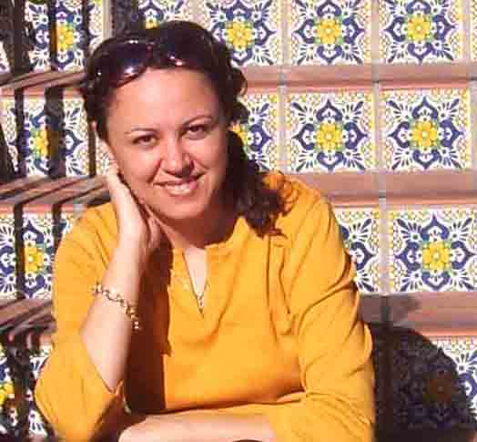

|  |
My Introduction:
My name is Maryam Pakdel. I was born in Tehran, Iran. I completed my Bachelor degree of Science in plant pathology at Zanjan University. In 2020, I got my bachelor of Art Education at
California State University Sacramento. However, I believe that getting away from my country, culture, and tradition helped me to understand more about other cultures and traditions that will have a big influence in my works of art in the future. |